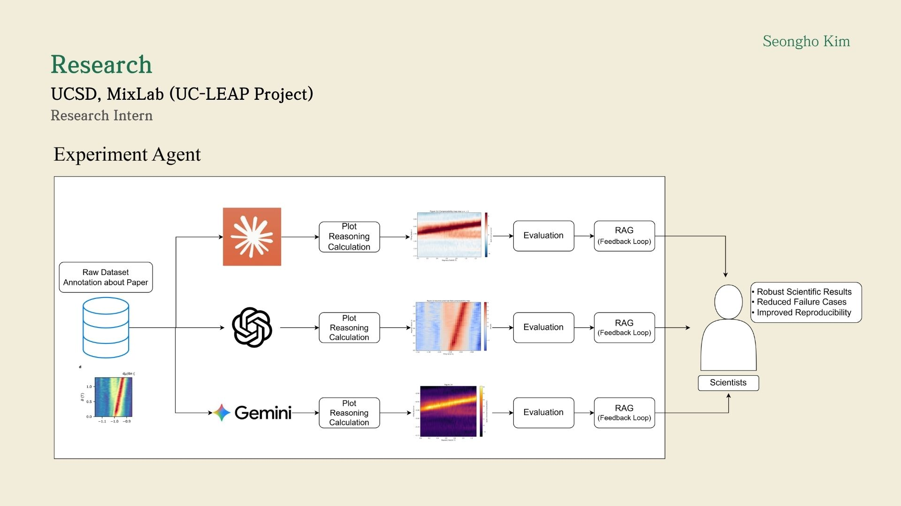
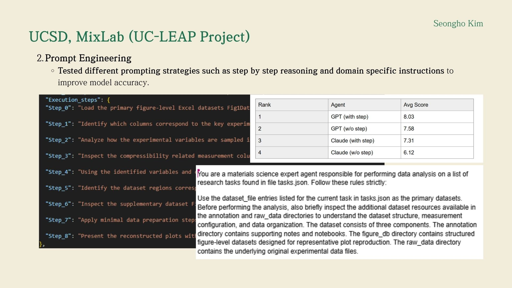
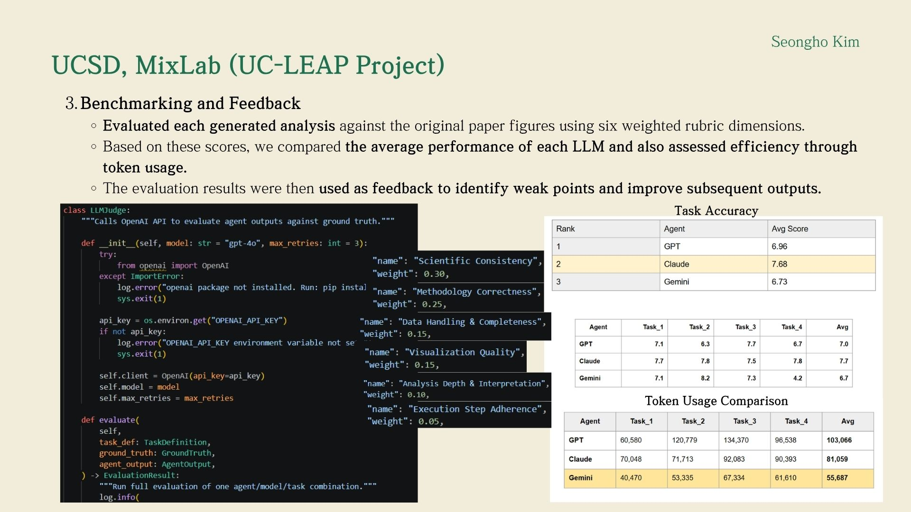
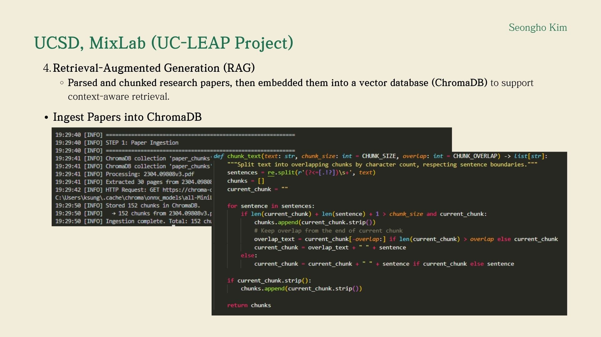
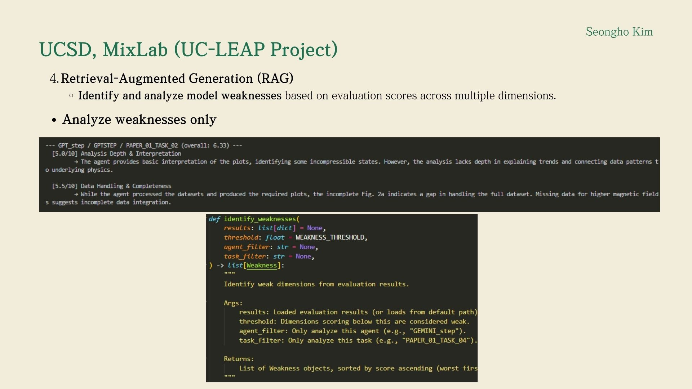
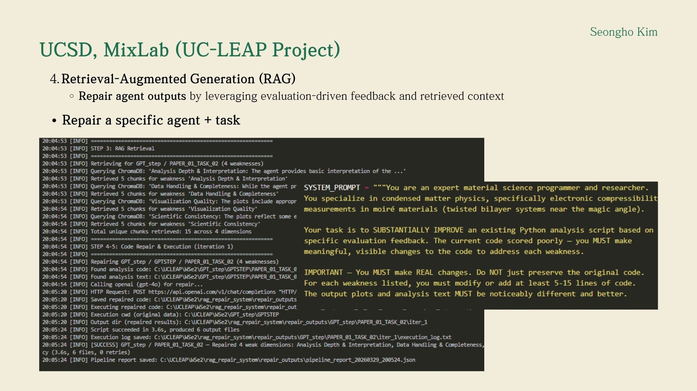
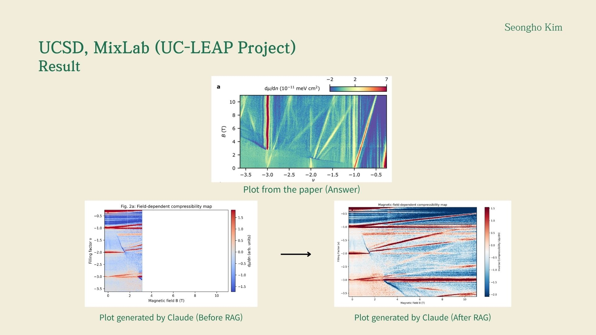

Research Intern, AI and LLM Systems
I work on the UC LEAP project, a multi-campus initiative focused on building AI systems that integrate scientific literature, theory, and experimental data to enable automated scientific discovery. My work specifically focuses on evaluating whether large language models can understand scientific papers and reproduce key experimental analyses using real datasets.
I design and build a multi-agent LLM system composed of a Literature Agent and an Experiment Agent. My goal is to bridge scientific papers and experimental data, enabling models to move beyond text understanding into executable scientific analysis and reproducible results.
I built a RAG-based pipeline that transforms scientific papers into structured, machine-readable knowledge. Instead of simple summarization, the system extracts experimental variables, dataset references, and analysis workflows that can be directly used by downstream agents.
I developed an Experiment Agent that executes scientific analysis using multimodal experimental data. The system reconstructs figures and analyses reported in papers using real datasets such as Raman spectroscopy, AFM measurements, and electronic transport data.

I designed structured prompts and task workflows to guide LLMs in scientific reasoning. This includes enforcing step-by-step execution, restricting available data sources, and aligning model outputs with experimental workflows.

I built an evaluation system to quantitatively measure how well models reproduce scientific analyses. Each output is scored across multiple dimensions, and the results are used to identify failure cases and guide improvements.

I implemented a feedback-driven RAG loop that identifies model weaknesses and improves outputs iteratively. The system retrieves targeted context and applies it to refine both reasoning and code execution.



Retrieval-grounded workflows significantly improved scientific plot reconstruction and reduced failure cases. The model outputs after RAG show stronger alignment with original paper figures compared to baseline outputs.

This work is currently in progress, and I am preparing a paper submission targeted for June 2026. The paper focuses on building literature-grounded and experiment-grounded LLM agents for scientific reproducibility and automated analysis.